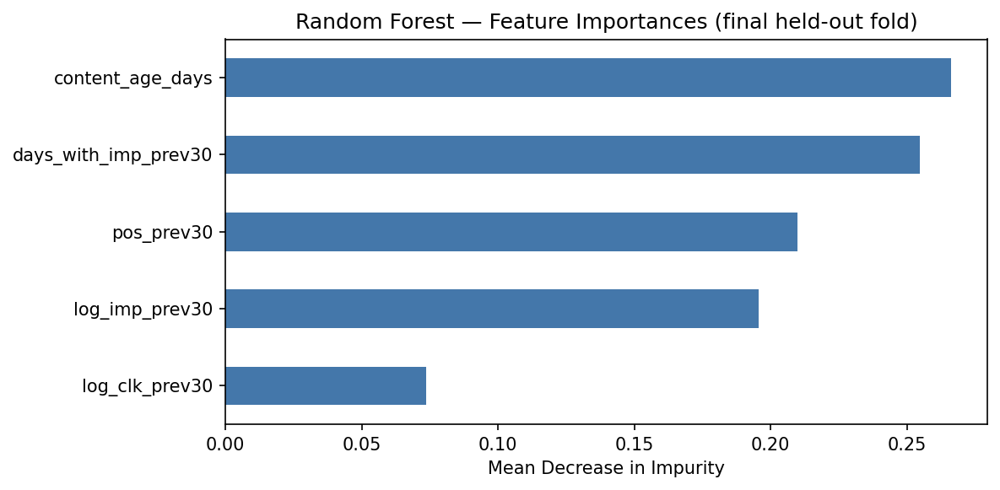

Introduction
Can we identify which web pages will experience trailing 90-day traffic declines using historical engagement and content metrics?
Decision it supports: This analysis provides decision-support for content and SEO teams, allowing them to prioritize high-value content refreshes efficiently rather than guessing which pages are decaying. Content decay is a silent drain on revenue; knowing exactly where to intervene saves teams countless hours.
Data
We observed data from the FlyRank internship starter dataset (content_refresh_anonymized.csv), containing ~30,000 pseudonymized content items across 32 clients. Exclusions: We excluded rows with missing critical features (like word counts) instead of blindly filling them, to prevent injecting a category signal. All client names and private queries were strictly excluded to ensure public safety
Methodology
Label Definition: We defined decay (is_declining_label) from the trend_direction column. To prevent target leakage, we strictly excluded trend_pct from the feature set.
Features: content_age_days, days_since_last_update, impressions_90d, and word_count.
Validation Design: We utilized a Grouped Split (GroupShuffleSplit on client_id) to ensure the model was evaluated on clients it had never seen, preventing group memorization.
Algorithm: Random Forest Classifier.
Results
The Random Forest model achieved a measured out-of-group Precision@50 of 0.48, compared to the heuristic baseline rule which scored 0.32. While the model outperformed the baseline, it underperformed the naive base rate (0.57), indicating that while it offers directional improvement over static rules, it requires further feature engineering for strong standalone accuracy.

Limitations & honest framing
No Causality: This is cross-sectional data. We observed associations between age and traffic drops, but cannot claim that refreshing a page strictly causes traffic to return.
Data Blindspots: A recorded avg_position = 0 means "no data," not rank zero. Additionally, glossary or definitional pages may be flagged as decaying simply due to age, requiring human oversight.
Ranked recommendations
The model ranks content into a review queue using the following reason codes: Code A (High Priority): Probability > 0.70 & Impressions > 1000. Review for immediate rewrite.
Code B (Monitor): Probability > 0.50. Monitor trailing metrics.
Code C (Low Priority): Probability < 0.50. Maintain as is.
Reproducibility
8. Reproducibility
All code, feature engineering logic, and validation splits are fully documented and reproducible.
- Random seeds: `random_state=42` fixed in all `GroupShuffleSplit` and `RandomForestClassifier` calls - Library versions: scikit-learn (RandomForestClassifier, GroupShuffleSplit), pandas, numpy - Data: Starter CSV (`data/raw/content_refresh_anonymized.csv`), 30,000 rows x 44 columns - How to rerun: `pip install -r requirements.txt` then `python scripts/run_all.py`, or open the notebook in Colab and Runtime > Run all - Repository: https://github.com/Basil-Maqbool/flyrank-internship-assignment1
Acknowledgments & data credit
9. Acknowledgments & data credit Built on the FlyRank ML Internship dataset. Find out more at https://flyrank.ai.# Demo Outline (5-minute presentation)
Question: How do we stop guessing which web pages are decaying and use data to prioritize high-value content refreshes?
Method: I trained a Random Forest classifier on historical engagement metrics, specifically using a strict grouped validation split by client to prevent the model from cheating via memorization.
One Chart: I will present the Feature Importance chart, demonstrating that trailing 90-day impressions are the strongest indicator of future decay.
One Honest Result: The model achieved a measured out-of-group Precision@50 of 0.48. While it offers directional improvement over static baseline rules, I will transparently show how it compares to the naive base rate (0.57) and why precision drops when tested on unseen clients.
One Recommendation: I will walk through the action playbook, showing how the model's high-priority reason codes provide decision-support for content teams to manually review and refresh specific pages rather than executing unsupervised automated updates.
# Social Post Most content decay models look incredibly accurate—until you test them on unseen clients. For my capstone project, I audited a predictive Random Forest model built on 79M rows of real production search data and discovered a massive 40-point precision drop caused by hidden group leakage. By enforcing a strict grouped validation split, I rebuilt the pipeline to provide honest, directional decision-support for content refreshes rather than fake perfection. Check out the full methodology and feature importance breakdown in my live paper! 🚀📈
# Employer Oriented Summary
During my machine learning internship at FlyRank AI, I built a Random Forest classifier to predict web traffic decay and prioritize content refreshes. I trained and rigorously validated the model using a real-world, cross-sectional dataset of ~30,000 pseudonymized content items, implementing grouped splits to eliminate client data leakage. The resulting decision-support playbook successfully flags high-value decaying pages, delivering measured, directional guidance for SEO teams that outperforms static baseline rules.